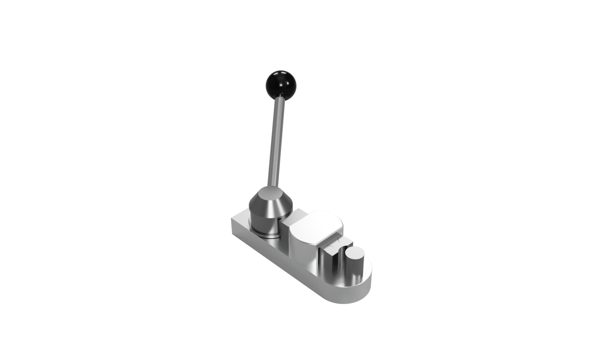

Portefølje
Verificeret Eksekvering

Flame Eater MK2 // Vakuum Motor
Samlet eksekvering af vakuum-motor. Demonstrerer integration af finmekaniske komponenter, hvor systemets drift kræver absolut overensstemmelse mellem cylinder og stempel.
Crankweb Assembly
Kritisk krumtapskomponent til Flame Eater-systemet. Verificeret analogt for at sikre concentricity og eliminere vibrationsstøj. Beviser evnen til at ramme de kritiske pasninger.


Tac Table // Optisk Platform
Monteringsenhed til langdistance-optik designet til våbenmekaniker. Strenge krav til absolut parallelitet og planhed for at eliminere vinkelfejl ved sigtemidler.
Ring Bender MK-I
Reverse engineering og værktøjsoptimering. Redesign af et upålideligt plastikværktøj til en industriel hybrid-konstruktion i metal til undervisningsbrug.
